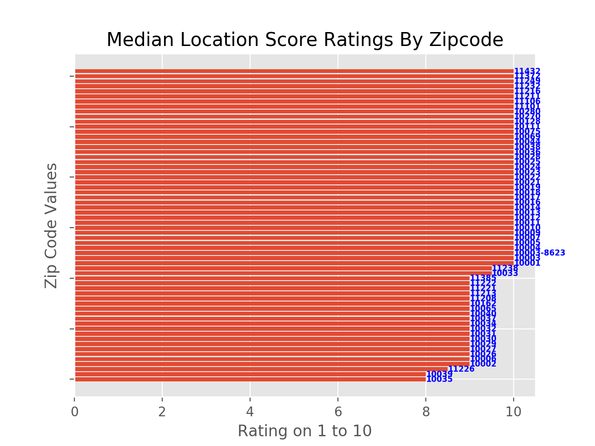

Click on the desired view-type
NOTE: Click on the tabs below to be able to view the graph.
INFERENCES
- This chart compares size rank of zipcode with house prices. The lesser the rank, the higher the poulation in that zipcode.
- It can be observed that most of the population resides in nominal house priced colonies and shows the presence of just one complex with a comparatively overpriced house market.
- This passess the insight of the market being not too overbiased to a price range and is a good sign for investment.

INFERENCES
- This chart compares median house listing rating grouped by zipcode. The higher the rating, the better the houses within that zipcode.
- This feature is not a very strong indicator or supporter to choose a certain zipcode but is a good visualization to get an introuctory understand of currently existing expectations and views of customers.

INFERENCES
- This chart compares median house listing location rating grouped by zipcode. The higher the rating, the better the locality of the zipcode.
- This feature is not a very strong indicator or supporter to choose a certain zipcode but is a good visualization to get an introuctory understand of the aesthetic values and tastes of customers.
- It gives good idea on the perception of the location's quality
INFERENCES
- This chart compares median house listing price-value rating grouped by zipcode. The higher the rating, the better are the prices mentioned in the listing within that zipcode.
- This feature is a good indicator to understand what prices pass as reasonable for consumers hitherto within a certain zipcode. Future pricing operation can lookup such information and use it to establish a decent price.